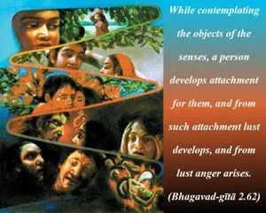
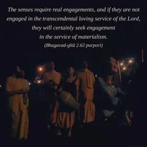
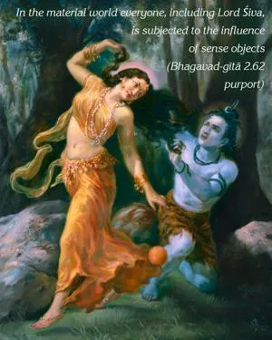
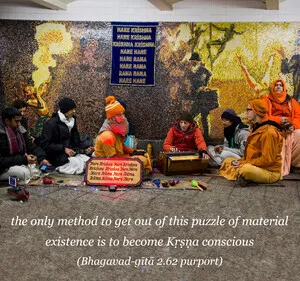
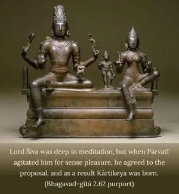

While contemplating the objects of the senses, a person develops attachment for them, and from such attachment lust develops, and from lust anger arises.





One who is not Kṛṣṇa conscious is subjected to material desires while contemplating the objects of the senses. The senses require real engagements, and if they are not engaged in the transcendental loving service of the Lord, they will certainly seek engagement in the service of materialism. In the material world everyone, including Lord Śiva and Lord Brahmā – to say nothing of other demigods in the heavenly planets – is subjected to the influence of sense objects, and the only method to get out of this puzzle of material existence is to become Kṛṣṇa conscious. Lord Śiva was deep in meditation, but when Pārvatī agitated him for sense pleasure, he agreed to the proposal, and as a result Kārtikeya was born. When Haridāsa Ṭhākura was a young devotee of the Lord, he was similarly allured by the incarnation of Māyā-devī, but Haridāsa easily passed the test because of his unalloyed devotion to Lord Kṛṣṇa. As illustrated in the above-mentioned verse of Śrī Yāmunācārya, a sincere devotee of the Lord shuns all material sense enjoyment due to his higher taste for spiritual enjoyment in the association of the Lord. That is the secret of success. One who is not, therefore, in Kṛṣṇa consciousness, however powerful he may be in controlling the senses by artificial repression, is sure ultimately to fail, for the slightest thought of sense pleasure will agitate him to gratify his desires.